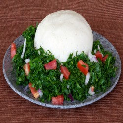
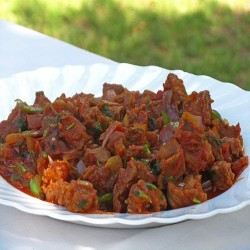
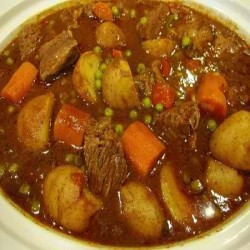
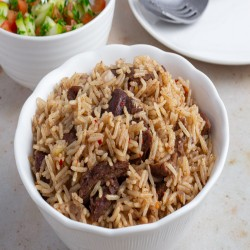

Ugali
Ugali, also known as posho, sima, and other names, is a type of corn meal made from maize or corn flour in several countries in Africa.
Ugali RecipeBeef
Everyone loves nyama. I mean who doesn't?
Beef RecipeMatoke
This is the plantain. For breakfast, lunch or supper you can always eat your matoke with any stew available.
Matoke RecipeOmena

Also known as sardines. In Tanzania they call them dagaa. These are small fishes. If you find a good cook, you will love it!
Omena RecipePilau
Pilaf or pilau is a rice dish, or in some regions, a wheat dish, whose recipe usually involves cooking in stock or broth, adding spices, and other ingredients such as vegetables or meat, and employing some technique for achieving cooked grains that do not adhere to each other.
Pilau Recipe